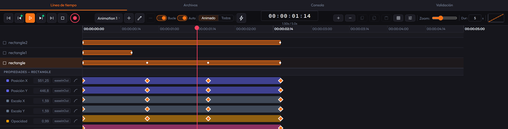

IHTML Interactive HTML
Éditeur visuel d'animations HTML/CSS : un canvas avec artboards, une timeline avec keyframes, un inspecteur de propriétés et des actions sans code. App pour Windows, macOS, Linux et Android. Publiez sur le web avec Export HTML, ou envoyez un .ihtml — un document interactif qui s'ouvre avec IHTML Mirror et reste modifiable.
Télécharger
Téléchargez IHTML
App de bureau et Android. Installez une fois et ça fonctionne hors ligne.
Toutes les versions et tous les formats →
Sur Android, IHTML Mirror s'installe (ouvre et exécute un .ihtml) ; l'éditeur complet
est réservé au bureau. iOS : bientôt.
Fonctionnalités
Tout ce que fait l'éditeur.
Sans écrire de code.
De la timeline avec keyframes à la vraie physique : animation web professionnelle, dans une seule fenêtre.
Timeline avec keyframes
Plusieurs animations nommées et indépendantes, auto-keyframe (REC), easing visuel, marqueurs d'action et presse-papiers au clavier.
Artboards multiples
Des scènes dans un même canvas, chacune avec sa taille et son fond ; pages navigables avec transitions à l'export.
Inspecteur visuel complet
Design, Data, Actions et Physique : mise en page, typographie avec recherche de polices web, dégradés avec ligne libre directement sur le canvas (apparaît toute seule, en un clic), sélecteur de couleur fusionné dans le même popover, états hover/active, classes CSS et plus.
Actions sans code
Clic, survol, touche, scroll, délai… pour afficher/masquer, animer, jouer des timelines, définir des variables, aller à des pages et plus.
De vrais vecteurs
Rectangles, ellipses, polygones et paths dessinés avec Pen : exportés en véritable
<svg>, avec édition de nœuds, opérations booléennes et morphing par keyframes.
8 langues · 6 thèmes
Interface traduisible (EN, ES, PT, FR, DE, IT, JA, ZH) et six thèmes, clairs et sombres. Ce sont des préférences de l'éditeur, jamais du fichier exporté.
Performance réelle
Le moteur d'animation positionne avec transform (compositeur/GPU) au lieu de
left/top — aussi bien dans l'éditeur que dans le HTML exporté.
API publique
window.ihtmlDocument : contrôlez les animations, variables et actions du résultat
exporté depuis votre propre script ou un <iframe>.
MCP pour agents IA
Un vrai serveur MCP : Claude Code (ou un autre client MCP) contrôle directement l'éditeur déjà ouvert — crée et modifie des éléments, change de breakpoints, ajuste le canvas et exporte, sans simuler de clics.
Import / Export
Importe .ihtml (et d'anciens .json), du HTML brut, du SVG et des designs
de Sketch, Penpot et EPUB. Exporte HTML unique ou séparé, image (PNG/WebP/JPEG), GIF et vidéo.
Composants prêts à l'emploi
Plus de 50 types d'éléments : textes, boutons, inputs, cards, navbar, pricing, tabs, sliders, canvas, vidéo, iframes… avec de vraies propriétés HTML par type.
En action
L'éditeur, de l'intérieur
Canvas, timeline et inspecteur dans une seule fenêtre. Pas de panneaux flottants à courir après.



Le format
Deux façons de partager
Un .html pour publier sur le web, ou un .ihtml pour envoyer un document
interactif qui s'ouvre avec IHTML Mirror.
Export HTML → le web
Un fichier .html standard (unique ou séparé en CSS+JS), avec le moteur d'animation
embarqué. Fonctionne dans n'importe quel navigateur et hébergement, ou dans un
<iframe>.
.ihtml → IHTML Mirror
Le fichier que vous envoyez : il embarque le projet entier (éléments, animations, actions, polices, images et vidéo). Qui le reçoit l'ouvre avec IHTML Mirror, l'app gratuite — bureau ou Android.
Le même .ihtml se réédite
Ce fichier est à la fois le résultat et la source : rouvrez-le dans l'Éditeur et reprenez exactement où vous en étiez. Pas de projet séparé à perdre.
IHTML Mirror
Le PDF, mais qui bouge
Mirror ouvre et exécute un .ihtml. Pensez-y comme un PDF — mais avec animation,
interaction et contrôle de qui l'ouvre et jusqu'à quand.

Entreprises
Propositions, catalogues, rapports, onboarding — et publicité interactive sans internet : emportez-le sur une clé USB à un salon, un stand ou un magasin et ça s'ouvre pareil. Vous envoyez un fichier, pas un lien.
Santé
Documents pour les patients, formulaires de consentement éclairé et guides de procédure : animés,
clairs et dans la langue qu'il faut. Le .ihtml ne dépend pas d'un site qui pourrait
tomber.
Éducation
Livres et notes de cours interactifs, exercices et présentations de classe. L'élève les ouvre sans compte ; avec un vrai texte et des rôles ARIA, ils fonctionnent avec les lecteurs d'écran et la navigation au clavier.
Contrôle de distribution
Chaque .ihtml est public, semi-privé ou privé (chiffré par mot de
passe, AES-256). Avec une date d'expiration optionnelle pour du contenu qui ne devrait pas circuler
indéfiniment.
Tout est intégré
Le fichier embarque polices, images et vidéo. Une fois Mirror installé, ça s'ouvre hors ligne : ni CDN, ni polices qui ne chargent pas, ni liens cassés.
Gratuit pour qui le reçoit
IHTML Mirror ne coûte rien — comme un lecteur PDF. Le créateur s'abonne pour exporter ; le destinataire installe juste Mirror et ouvre.
Tarifs
Commencez gratuitement. Abonnez-vous quand vous voulez.
L'éditeur est gratuit. L'abonnement débloque l'export. Annulez à tout moment.
Gratuit
US$0
- Éditeur complet, sans limite de design
- Importer
.htmlet.ihtml - Exporter en image : PNG, WebP, JPEG
- Pas d'export HTML ni
.ihtml
Complet
US$4 /mois
- Tout ce qu'il y a dans Gratuit
- Exporter du HTML interactif et
.ihtml - Exporter GIF et vidéo (MP4, WebM)
- Aperçu mobile par QR code
Aussi US$36/an (deux mois gratuits). Jusqu'à 2 appareils. Vos fichiers restent toujours sur votre machine.
Premiers pas
Comment commencer
Téléchargez, installez, et vous créez déjà. Pas besoin de compte ni de connexion.
- Téléchargez l'installeur de votre système et ouvrez IHTML.
- Glissez des éléments du panneau Elements vers le canvas et ajustez tout dans l'Inspector à droite.
- Placez la tête de lecture sur la Timeline, touchez le bouton keyframe d'une propriété, déplacez-la et touchez à nouveau : vous avez déjà une animation.
-
Exportez (gratuit : image ; forfait Complet : HTML et
.ihtml). Pour le web, Export HTML ; pour envoyer un document, un.ihtmlqui s'ouvre avec IHTML Mirror et reste modifiable.
Documentation
Guide de l'utilisateur
Tout ce que fait l'éditeur : interface, vecteurs, artboards, timeline, actions, physique, export, raccourcis clavier et l'API publique en temps réel.
Questions fréquentes
Réponses directes
L'essentiel d'IHTML en quatre réponses courtes.
Qu'est-ce qu'IHTML ?
IHTML (Interactive HTML) est un éditeur visuel d'animations HTML/CSS : un canvas avec artboards, une timeline avec keyframes, un inspecteur de propriétés et des actions sans code. C'est une app de bureau pour Windows, macOS et Linux, et une app pour Android.
IHTML est-il gratuit ?
Oui : l'éditeur est gratuit et vous pouvez exporter des images (PNG, WebP et JPEG). L'abonnement de 4 US$/mois — ou 36 US$/an — permet d'importer et d'exporter des fichiers .html et .ihtml, ainsi que l'export GIF et vidéo ; le forfait Gratuit n'exporte pas de HTML.
Qu'est-ce que le format .ihtml ?
C'est le format de document d'IHTML : il embarque le projet entier (éléments, animations, actions,
polices, images et vidéo). Il s'ouvre et s'exécute avec IHTML Mirror, l'app gratuite pour
bureau et Android, et le même fichier se rouvre dans l'Éditeur pour continuer à le modifier. Pour
publier sur le web, on utilise Export HTML, qui génère un fichier .html standard.
Ai-je besoin d'IHTML Mirror pour voir un .ihtml ?
Oui : un fichier .ihtml s'ouvre avec IHTML Mirror (gratuit, Windows/macOS/Linux/
Android). C'est comme un lecteur PDF — qui reçoit le fichier installe Mirror une fois et
c'est tout. Si vous préférez que ça fonctionne dans n'importe quel navigateur sans rien installer,
exportez avec Export HTML plutôt que .ihtml.
Les projets IHTML sont-ils envoyés à un serveur ?
Non. Les projets vivent sur votre machine et l'éditeur fonctionne hors ligne ; il n'y a ni comptes ni backend. Le HTML exporté fonctionne sur n'importe quel hébergement ou comme fichier unique. L'app inclut une télémétrie de diagnostic optionnelle (erreurs et version, jamais le contenu de vos projets) qui peut être désactivée dans les Paramètres.